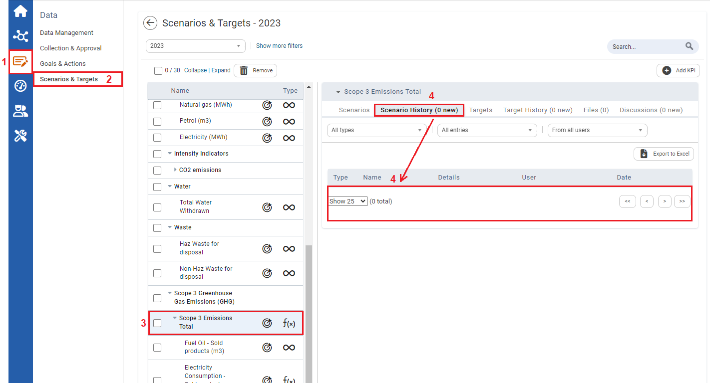

The Scenario History tab can be used to view changes and the specifics of changes made to the KPIs over time and by whom.
To View the Scenario History of a KPI

| 1 | On the Left navigational panel, click Data. |
| 2 | Click Scenarios & Targets. |
| 3 | Select either a numeric or formula KPI. Information on the KPI will display to the right. |
| 4 | Click the Scenario History tab. A history of scenario values for a KPI will display if changes were made to the scenario value of a KPI. If no changes were made to the scenario value of a KPI, the Scenario History tab will have a blank history table. |